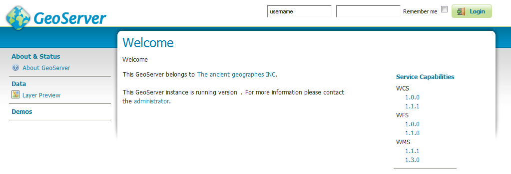

Mac OS X binary¶
Note
For installing on OS X with an existing application server such as Tomcat, please see the Web archive section.
An alternate way of installing GeoServer on OS X is to use the platform-independent binary. This version is a GeoServer web application bundled inside Jetty, a lightweight and portable application server. It has the advantages of working very similarly across all operating systems and is very simple to set up.
Installation¶
Make sure you have a Java Runtime Environment (JRE) installed on your system. GeoServer requires a Java 8 or Java 11 environment, as provided by AdoptOpenJDK macOS installers.
Note
For more information about Java and GeoServer compatibility, please see the section on Java Considerations.
Navigate to the GeoServer Download page.
Select the version of GeoServer that you wish to download. If you’re not sure, select Stable.
Select Platform Independent Binary on the download page.
Download the archive and unpack to the directory where you would like the program to be located.
Note
A suggested location would be
/usr/local/geoserver.Add an environment variable to save the location of GeoServer by typing the following command:
echo "export GEOSERVER_HOME=/usr/local/geoserver" >> ~/.profile . ~/.profile
Make yourself the owner of the
geoserverfolder, by typing the following command:sudo chown -R <USERNAME> /usr/local/geoserver/
where
USER_NAMEis your user nameStart GeoServer by changing into the directory
geoserver/binand executing thestartup.shscript:cd geoserver/bin sh startup.shWarning
If you encounter the following error during startup, you may have some invalid JAI jars from the default Mac Java install:
java.lang.NoClassDefFoundError: Could not initialize class javax.media.jai.JAI
To fix this error, locate your Java extensions folder (Usually
/System/Library/Java/Extensionsand/or~/Library/Java/Extensions), and delete the following jars:jai_codec-1.1.3.jar jai_core-1.1.3.jar jai_imageio-1.1.jar
If you have upgraded your OS from an older version, you may not have permission to delete these jars. In this case, you will first need to disable System Integrity Protection.
In a web browser, navigate to
http://localhost:8080/geoserver.
If you see the GeoServer logo, then GeoServer is successfully installed.
GeoServer installed and running successfully¶
To shut down GeoServer, either close the persistent command-line window, or run the shutdown.sh file inside the bin directory.
Uninstallation¶
Stop GeoServer (if it is running).
Delete the directory where GeoServer is installed.